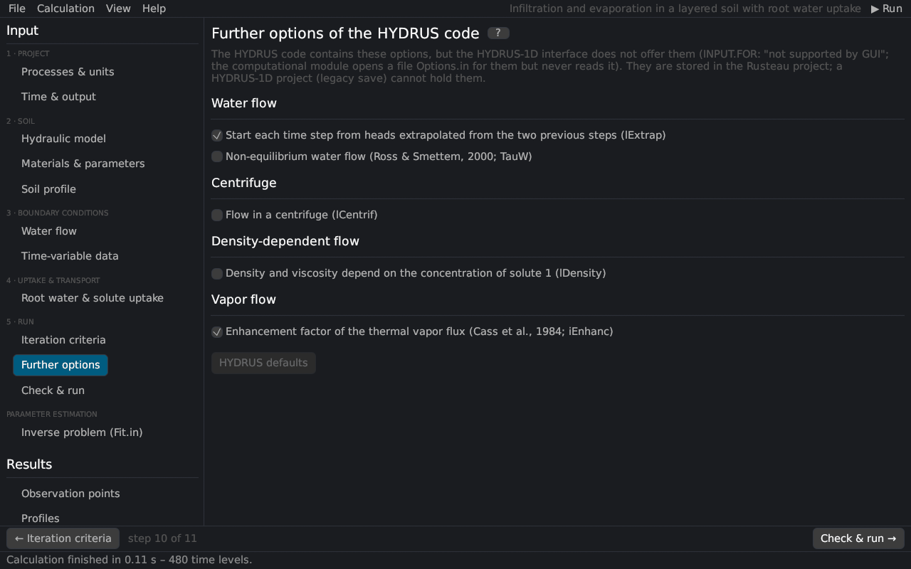

Further options of the HYDRUS code
The HYDRUS-1D code contains options that its interface does not offer (INPUT.FOR: "New Options – Not supported by GUI"). The computational module opens a file Options.in for them but never reads it, so HYDRUS-1D always runs with the defaults. Rusteau offers them on this page and stores them in the project; a HYDRUS-1D project cannot hold them. HYDRUS defaults resets them.


Water flow
| Option | Description |
|---|---|
| Extrapolation of the heads (lExtrap, default on) | each time step starts from heads extrapolated linearly from the two previous steps; off: from the heads of the previous step |
| Non-equilibrium water flow (TauW) | the water content approaches the equilibrium water content of the pressure head with the time constant τw Ross and Smettem (2000) (theory) |
Centrifuge (lCentrif)
Flow in a centrifuge: the gravity term becomes ω²(R + depth)/g with the rotation speed [rpm] and the distance R of the soil surface from the axis (theory). With a time-variable bottom boundary condition the hBot column gives the speed and the bottom pressure head is 0, as in HYDRUS.
Density-dependent flow (lDensity)
The density and the viscosity of the solution are cubic polynomials of the liquid concentration of solute 1: ρ/ρ0 = a0 + a1 c + a2 c² + a3 c³ (HYDRUS: 1 + 0.75 c) and μ/μ0 likewise (HYDRUS: 1). The conductivity scales with ρ/μ, the gravity term and the storage with ρ (theory).
Vapor flow
| Option | Description |
|---|---|
| Enhancement factor of the thermal vapor flux (iEnhanc, default on) | the thermal vapor flux is multiplied by the enhancement factor of Cass et al. (1984); off: factor 1 (vapor flow) |
Literature cited in this topic
- Cass, A., G. S. Campbell, and T. L. Jones (1984). Enhancement of thermal water vapor diffusion in soil. Soil Science Society of America Journal 48(1): 25–32. doi:10.2136/sssaj1984.03615995004800010005x
- Ross, P. J., and K. R. J. Smettem (2000). A simple treatment of physical nonequilibrium water flow in soils. Soil Science Society of America Journal 64(6): 1926–1930. doi:10.2136/sssaj2000.6461926x
All sources: References.